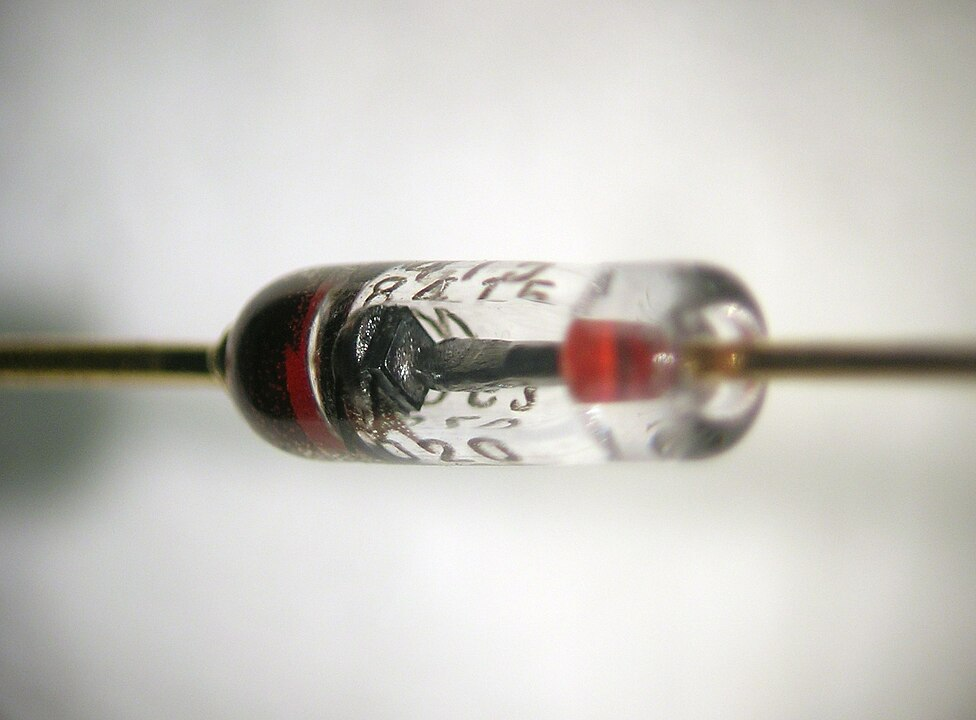

Apa Itu Dioda Semikonduktor?

Dioda semikonduktor itu dibuat dari bahan yang namanya semikonduktor, yang mana dia bisa hantarkan arus listrik, tapi enggak semudah konduktor biasa. Bahan yang paling sering dipakai buat bikin dioda adalah silikon dan germanium.
Cara Kerja Dioda Itu Bagaimana?
Dioda semikonduktor punya dua kutub, yaitu anoda (kutub positif) dan katoda (kutub negatif), mirip kayak kabel baterai.
Jadi, begini, prinsip kerjanya simpel banget. Kalo kita kasih listrik ke dioda dengan anoda positif dan katoda negatif (kondisi bias maju), elektron bisa bergerak dari anoda ke katoda. Nah, kalo di situasi kayak gini, dioda itu lagi-lagi kayak pengatur lalu lintas yang ngasih izin arus jalan.
Tapi, coba deh kita coba sebaliknya, pengen arus bergerak dari katoda ke anoda (kondisi bias mundur), dioda ini kayak nutup pintunya. Artinya, arus listrik enggak bisa lewat dari katoda ke anoda. Nah, di kondisi ini, dioda jadi penghalang buat arus yang cuma boleh lewat satu arah aja.
Dioda Semikonduktor Sering Dipakai di Mana?
Dioda semikonduktor ini sering dipakai dalam berbagai alat elektronik. Misalnya, buat bikin listrik yang biasanya bolak-balik jadi bergerak satu arah, yang penting banget buat alat elektronik. Selain itu, dioda juga jadi perlindungan buat alat elektronik dari tegangan berlebih.
Kesimpulan
Menurut saya. Dioda semikonduktor itu meskipun kelihatan sederhana, tapi punya peran besar banget dalam teknologi sehari-hari kita. Dia kayak pengatur lalu lintas buat listrik, yang ngatur arus listrik biar enggak kebingungan. Jadi, meskipun keliatan kecil dan simpel, dioda semikonduktor ini punya peran penting dalam teknologi yang kita pakai sehari-hari.
Itu saja sepertinya yang bisa saya tuliskan. Terima kasih.